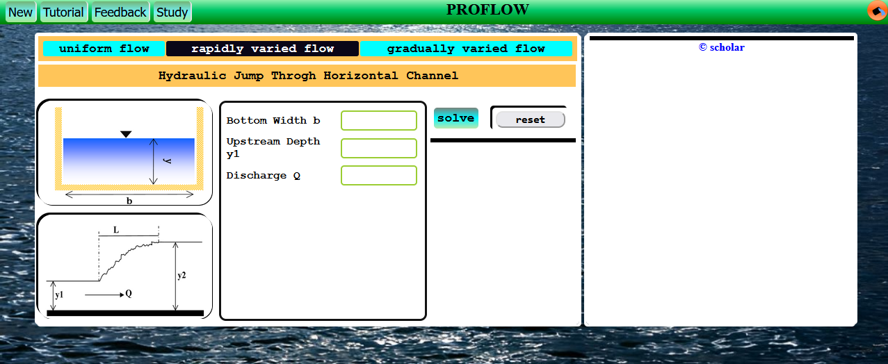
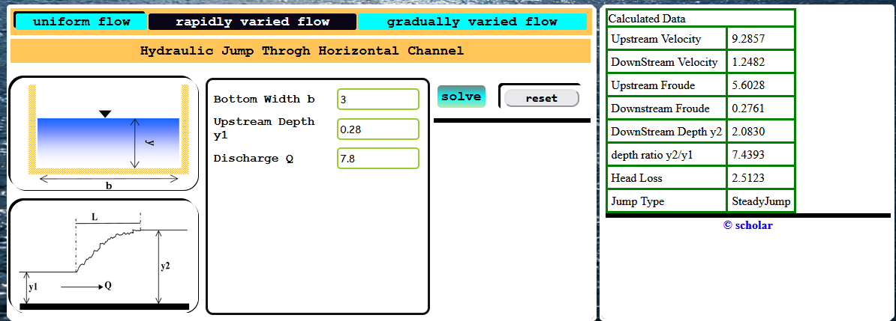

Rapidly Varied Flow Analysis
Under this flow type, the program provides support for the hydraulic jump analysis.
The program inputs upstream conditions and calculates the sequent depth ratio, energy loss,and other flow properties, if the specified consitions can really cause a jump to occur.
- To enable rapidly varied flow analysis, click the button labeled rapidly varied flow. The user interface will change and appear as shown below.

Notice the image illustration on the left!
- Enter values of the required upstream conditions. For this tutorial use Upstream Depth y1 = 0.28, bottom width b = 3,discharge Q = 7.8
- Then click solve button
Output should appear as below

NB: The
reset button can be used to clear all inputs, and the graphical area.